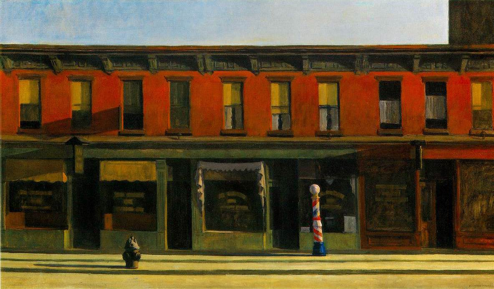
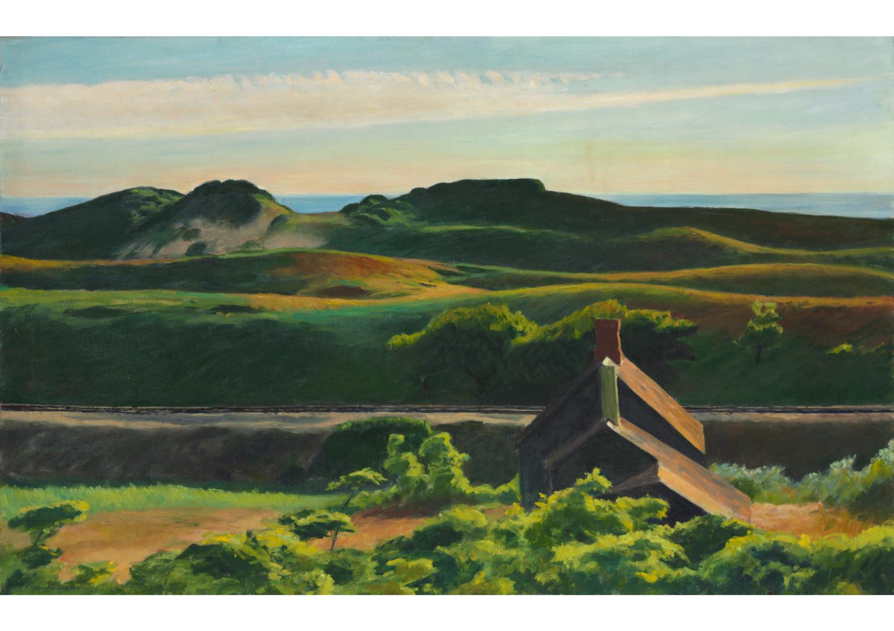
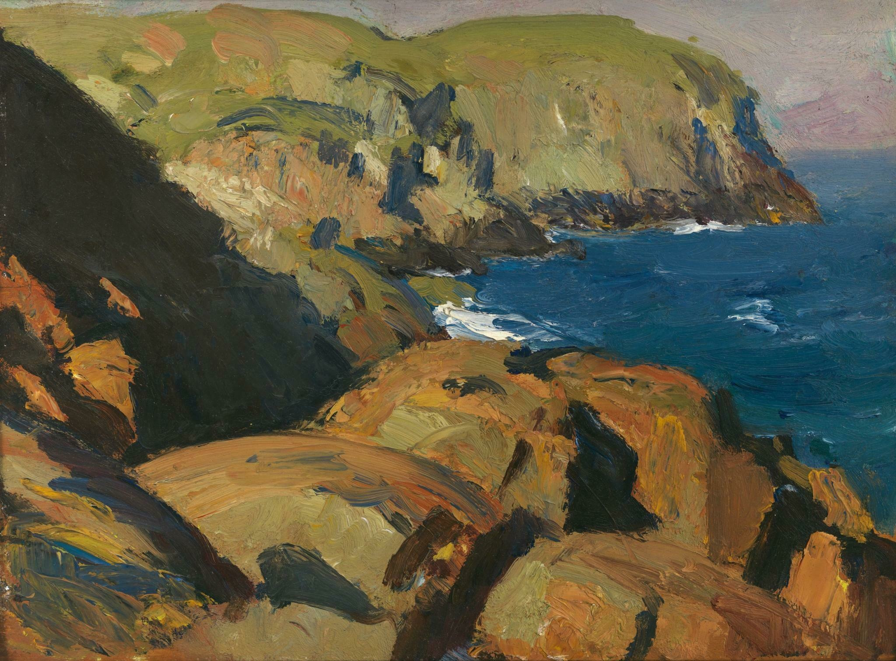
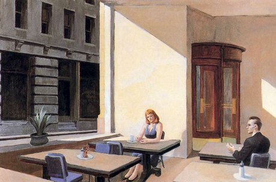

Umetnost
"Ceo odgovor je na platnu"
Metode
Iako je najpoznatiji po svojim slikama u ulju, Hoper je u početku postigao priznanje za svoje akvarele, a takođe je napravio i neke komercijalno uspešne bakropise. Pored toga, njegove sveske sadrže visokokvalitetne skice olovkom i hemijskom, koje nikad nisu bile namenjene javnosti. Hoper je posebnu pažnju posvetio geometrijskom dizajnu i pažljivom postavljanju ljudskih figura u odgovarajuću ravnotežu sa okruženjem. Bio je spor i metodičan umetnik, o čemu je napisao: "Potrebno je mnogo vremena da se ideja stvori. Onda moram drugo da razmišljam o tome. Ne počinjem da slikam dok ne razradim sve u svom umu. Dobro sam kad dođem do štafelaja." Često je pravio pripremne skice da bi razradio svoje pažljivo proračunate kompozicije. On i njegova supruga su vodili detaljnu knjigu svojih radove, beležeći stavke kao što su <"tužno neosvetljeno lice žene">, <"električno svetlo sa plafona"> i slično. Efikasna upotreba svetlosti i senke za stvaranje atmosfere takođe je jedna od centralnih Hoperovih metoda. Jarka sunčeva svetlost (kao amblem uvida ili otkrovenja) i senke koje baca takođe igraju simbolično moćne uloge u Hoperovim slikama. Iako je slikar realizma, Hoperov "meki" realizam je pojednostavio oblike i detalje. Koristio je zasićene boje da pojača kontrast i stvori atmosferu.
Teme
Hoper je svoje teme nalazio u dva primarna izvora: jedan, zajedničke karakteristike američkog života (benzinske pumpe, moteli, restorani, pozorišta, železnice i ulične scene), i njenih stanovnika; i drugi, morski i seoski pejzaži. Što se tiče njegovog stila, Hoper je sebe definisao kao "amalgam mnogih rasa" i nije član nijedne škole, posebno "Aškan škole". Kada je Hoper postigao svoj zreo stil, njegova umetnost je ostala dosledna i samostalna, uprkos brojnim umetničkim trendovima koji su dolazili i odlazili tokom njegove duge karijere.
Hoperovi morski pejzaži su spadali u jednu od tri kategorije: čisti pejzaži stena, mora i trave na plaži; svetionici i seoske kuće; i jedrilice. Ponekad je kombinovao sve ove elemente. Većina slika prikazuje snažno svetlo i lepo vreme. Pokazivao je malo interesovanja za snežne i kišne scene i za sezonske promene boja. Naslikao je većinu čistih morskih pejzaža u periodu između 1916. i 1919. na ostrvu "Monhegan". Njegova slika "Long leg" (1935) je skoro potpuno plava slika o jedrenju sa najjednostavnijim elementima, dok je delo "Ground Swell" (1935) složenije i prikazuje grupu mladih ljudi na jedrenju, tema koja podseća na ikonsku sliku Vinslova Homera "Breezing Up" (1876).
Urbana arhitektura i gradski pejzaži su takođe bili glavne teme za Hopera. Bio je fasciniran američkom urbanom scenom, zvajući je "naša zavičajna arhitektura sa njenom odvratnom lepotom, njenim fantastičnim krovovima, pseudo-gotikom, francuskom mansardom, kolonijalna, mešana ili šta već, bojama koje peku oči ili delikatne harmonije izbledelih boja, koje se hvataju jedna za drugom duž beskrajnih ulica koje se sužavaju u močvare ili gomile deponija". Iako kritičari tumače značenje i emocije u ovim gradskim pejzažima, Hoper je insistirao da ga više zanima sunčeva svetlost na zgradama i figurama nego bilo kakva simbolika.
Većina Hoperovih slika je usredređena na suptilnu interakciju ljudskih bića sa njihovom okolinom - izvedenu sa solo figurama, parovima ili grupama. Njegove primarne emocijalne teme su samoća, usamljenost, žaljenje, dosada i rezignacija. Emocije izražava u različitim okruženjima, uključujući kancelarije, javna mesta, stanove, puteve ili odmore. Kao da je stvarao kadrove za film ili prizore u predstavi, Hoper je postavio svoje likove kao da su snimljeni neposredno pre ili posle peripetije scene. Hoperove usamljene figure su uglavnom žene - često čitajući ili gledajući kroz prozor ili na svom radnom mestu.
| Istaknuti primeri | Slika | Informacije | ||||||
|---|---|---|---|---|---|---|---|---|
| Naziv | Godina | Metod | Stil | Muzej gde se čuva | Dimenzije | |||
| Tema | Američki život |  |
"Nighthawks" | 1942 | Ulje na platnu | Američki realizam | Umetnički institut u Čikagu | 84.1 cm × 152.4 cm |
 |
"Gas" | 1940 | Ulje na platnu | Socijalni realizam | MoMA | 66.7 cm × 102.2 cm | ||
 |
"High Noon" | 1949 | Ulje na platnu | Američki realizam | Dejton institut umetnosti | 69.85 cm x 100.33 cm | ||

| "Office at Night" | 1940 | Ulje na platnu | Američki realizam | Voker centar umetnosti | 56.4 cm × 63.8 cm | ||
|  | "Early Sunday Morning" | 1930 | Ulje na platnu | Američko scensko slikarstvo Socijalni realizam |
Vitni muzej američke umetnosti | 89.4 cm x 153 cm | ||
| Seoski pejzaži | 
| "The Mansard Roof" | 1923 | Akvarel | Realizam | Bruklin muzej | 35.2 cm x 50.8 cm | |
| "American Landscape" | 1920 | Bakropis | Realizam | Muzej umetnosti u Filadelfiji | 18.4 cm × 31.8 cm | |||
|  | "Hills, South Truro" | 1930 | Ulje na platnu | Američki realizam | Klivlend muzej umetnosti | 69.5 cm × 109.5 cm | ||
 |
"Road in Maine" | 1914 | Ulje na platnu | Pejzaž | Vitni muzej američke umetnosti | 61.6 cm × 74.3 cm | ||
 |
"Corn Hill (Truro, Cape Cod)" | 1930 | Ulje na platnu | Realizam | MekNej umetnički institut u San Antoniu | 72.4 cm x 108 cm | ||
| Morski pejzaži |  |
"Ground Swell" | 1939 | Ulje na platnu | Realizam | Nacionalna galerija umetnosti | 91.92 cm × 127.16 cm | |
|  | "Blackhead, Monhegan" | 1916-1919 | Ulje na platnu | Novi realizam | Vitni muzej američke umetnosti | 23.8 cm × 32.9 cm | ||
 |
"Coast Guard Station, Two Lights, Maine" | 1927 | Akvarel | Američki realizam | Metropolitanski muzej umetnosti | 35.2 cm × 50.5 cm | ||
 |
"Blackwell's Island" | 1928 | Ulje na platnu | Realizam | Kristalni mostovi muzej američke umetnosti | 87.6 cm × 151.3 cm | ||
| "The Cat Boat" | 1922 | Bakropis | Novi realizam | Edison galerija američke umetnosti | 19.69 cm × 24.77 cm | |||
| Gradski pejzaži | 
| "Shakespeare at Dusk" | 1935 | Ulje na platnu | Novi realizam | Privatna kolekcija | 26.7 cm × 40.6 cm | |

| "The City" | 1927 | Ulje na platnu | Novi realizam | Univerzitet Arizona muzej umetnosti | 93.98 x 69.85 cm | ||
|  | "Sunlight in a Cafeteria" | 1958 | Ulje na platnu | Novi realizam | Umetnička galerija u Jejl univerzitetu | 102.1 cm × 152.7 cm | ||

| "Summertime" | 1943 | Ulje na platnu | Novi realizam | Delaver muzej umetnosti | 74 cm x 111.8 cm | ||

| "New York Office" | 1962 | Ulje na platnu | Novi realizam | Montgomeri muzej lepih umetnosti | 101.6 cm x 139.7 cm | ||